A complete, step-by-step walkthrough of the Face Recognition Based Classroom Attendance System — every screen, every user flow, and the accounts you need to reach each part of the platform.
| 1 | What FaceTrack does The problem it solves and how the pieces fit together |
| 2 | Before you start Browser, camera and first-load requirements |
| 3 | Accounts & passwords Who signs in with what, and what each role unlocks |
| 4 | The screens, one by one Twelve screens with screenshots and numbered steps |
| 5 | User flows Set-up, the daily lecture routine, and end-of-semester reporting |
| 6 | Use cases Ten documented use cases with actors, steps and outcomes |
| 7 | Troubleshooting What to do when something does not work |
| 8 | Quick reference card One page to keep beside you during a demonstration |
Attendance that is taken by the camera, not by a register passed around the hall.
In most lecture halls attendance is still taken on paper. It eats lecture time, the sheets get lost, and students sign for friends who are not in the room. FaceTrack replaces that with a camera at the front of the class: a student looks at it, is recognised from their own face, and is marked present in under a second.
| Capability | What it means in practice |
|---|---|
| Instant attendance | No roll call. The camera scans continuously while you teach. |
| No proxy attendance | A student must present their own face. Naming somebody is not enough — matching happens on the server, against templates the browser never sees. |
| No double entries | A student who stays in front of the camera for ten minutes still produces exactly one record. The database itself enforces this. |
| Late tracking | Anyone recognised after your cut-off (15 minutes by default) is marked late rather than present. |
| Locked registers | Closing a session freezes it. Attendance cannot be added to a lecture that has finished. |
| Reports & eligibility | Attendance percentage per student, flagged against the course requirement (75% by default), exportable as CSV. |
Three things to check before your first lecture.
| Requirement | Detail |
|---|---|
| Browser | Google Chrome, Microsoft Edge or Safari, kept up to date. Chrome gives the smoothest camera performance. |
| Camera | Any built-in laptop webcam or USB camera. A camera you can angle towards the students works best. |
| Internet | Needed to reach the site and save attendance. Face detection itself runs on your own machine. |
| Lighting | Faces must be lit from the front. Students backlit by a window are the single most common cause of a missed face. |
The first time you open the Register student or live capture screen in a given browser, roughly 12 MB of face-recognition models download in the background. The camera button stays greyed out and reads Loading face detector… until this finishes — usually 10 to 40 seconds. The browser caches them afterwards, so it only happens once.
Browsers refuse camera access unless the page is on https:// or
localhost. The live site is on HTTPS, so it works:
| Address | Camera |
|---|---|
https://attendace-system-david.vercel.app/ | ✓ Works |
http://localhost:3000 (running it yourself) | ✓ Works |
http://192.168.x.x:3000 (a LAN address) | ✗ Blocked by the browser |
Students never sign in — they are identified by their face. Only staff have accounts.
Open https://attendace-system-david.vercel.app/ and you will land on the sign-in screen. Use one of these accounts:
| Action | Administrator | Lecturer |
|---|---|---|
| Sign in and see the dashboard | ✓ | ✓ |
| Register a new student and capture their face | ✓ | ✗ |
| Edit, re-enrol or delete a student | ✓ | ✗ |
| Create or delete a course | ✓ | ✗ |
| Add students to a course class list | ✓ | ✓ |
| Start a lecture session | ✓ | ✓ |
| Capture attendance with the camera | ✓ | ✓ |
| Mark a student manually | ✓ | ✓ |
| Close or reopen a session | ✓ | ✓ |
| Remove a wrong attendance record | ✓ | ✓ |
| View reports and export CSV | ✓ | ✓ |
| See every course in the institution | ✓ | ✗ own only |
| Create staff accounts | ✓ | ✗ |
Every screen in the platform, what it is for, and exactly what to click.
The entry point. There is no student login and no public sign-up — accounts are created by an administrator.
https://attendace-system-david.vercel.app/. You are redirected here automatically.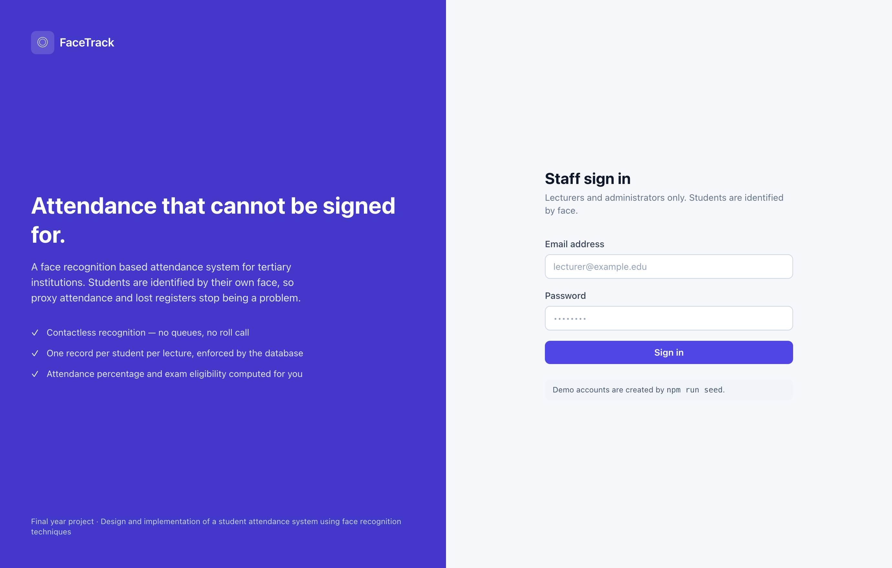
Your landing page and the fastest route back into a lecture that is already running.
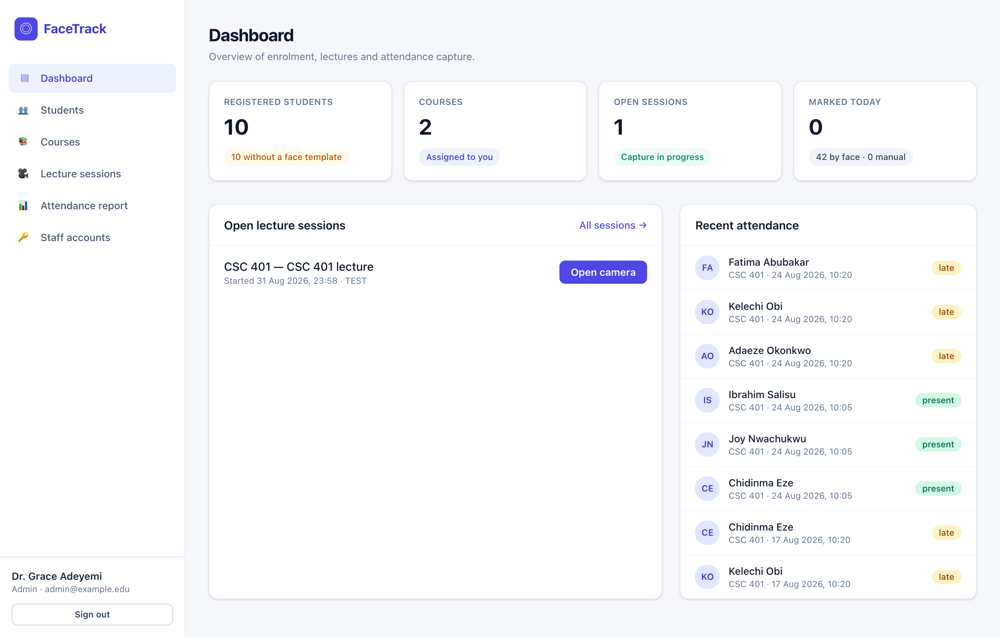
The full student roll, with each student's biometric enrolment status.
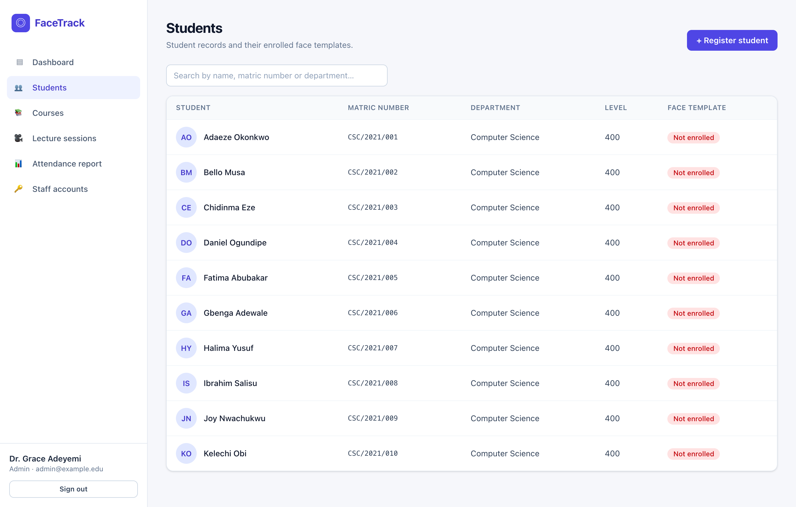
This is the most important screen in the system. A student who has never been enrolled here can never be recognised in class.
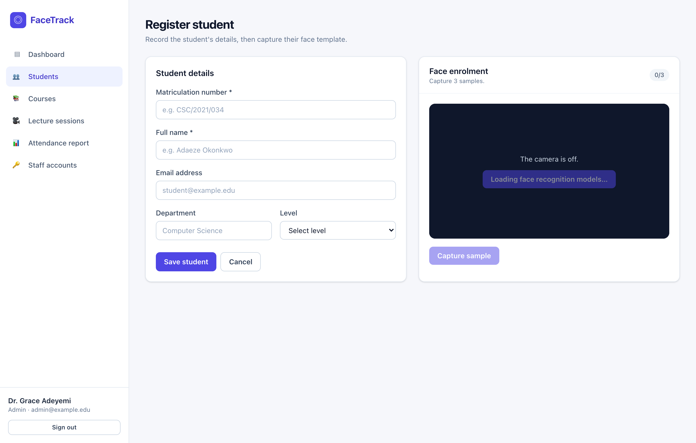
Everything recorded about one student.
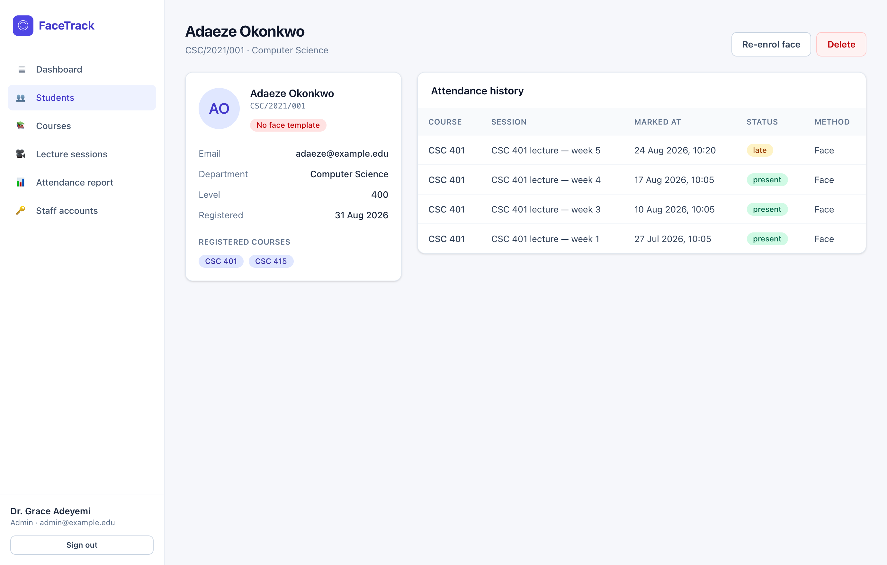
Administrators see every course; lecturers see only their own.
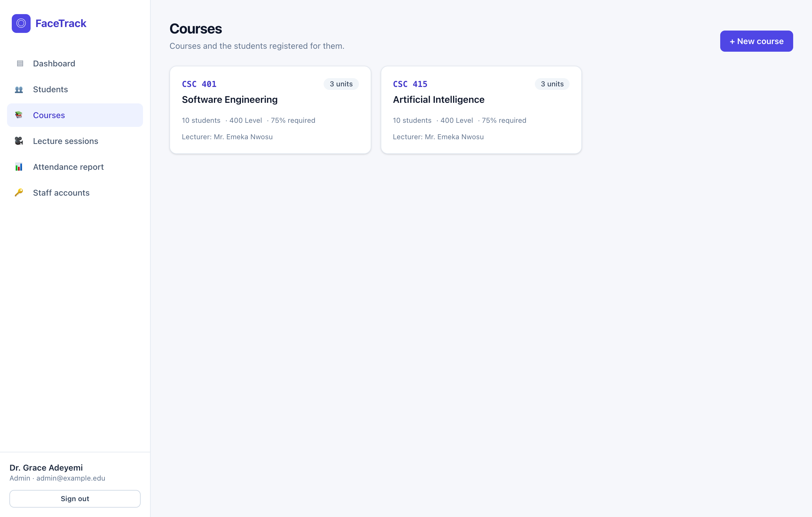
The class list matters more than it looks: only students registered on a course are candidates for recognition in that course's lectures. This is what stops a student from another class walking past the camera and being marked present.
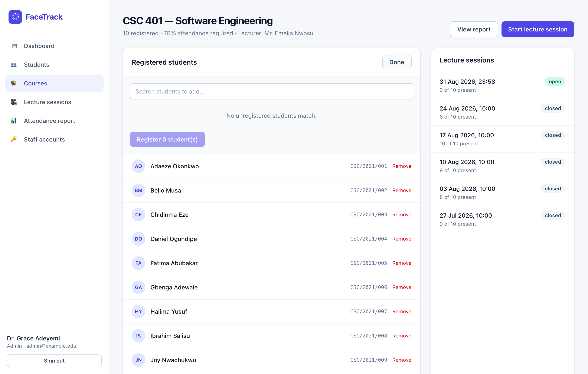
A session is one sitting of one lecture. Attendance can only be recorded into an open session.
The table below lists every session. Open ones offer Capture and Close; closed ones offer View register.
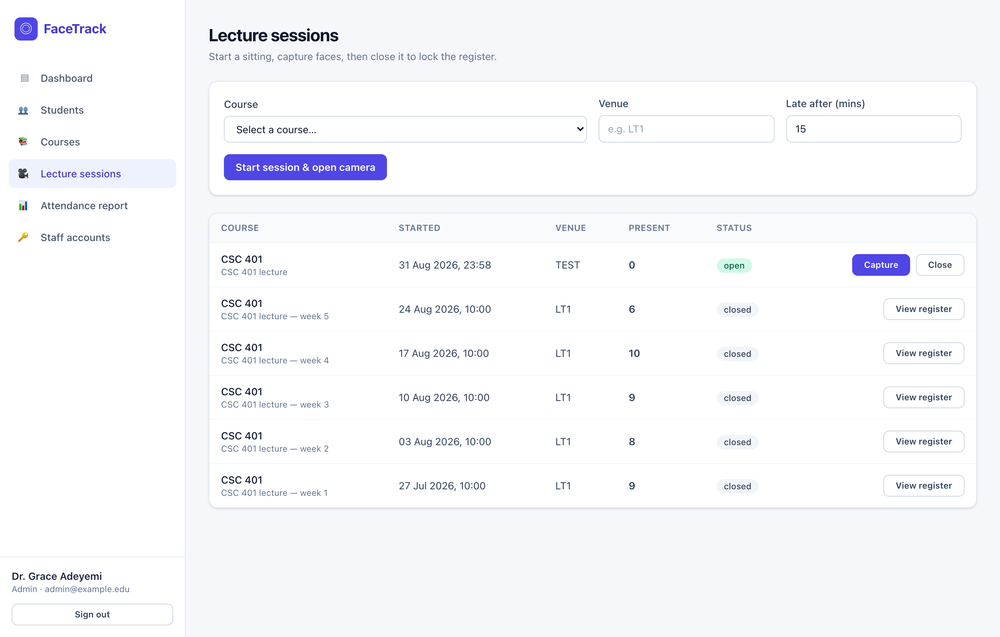
The screen you will spend your lecture on.
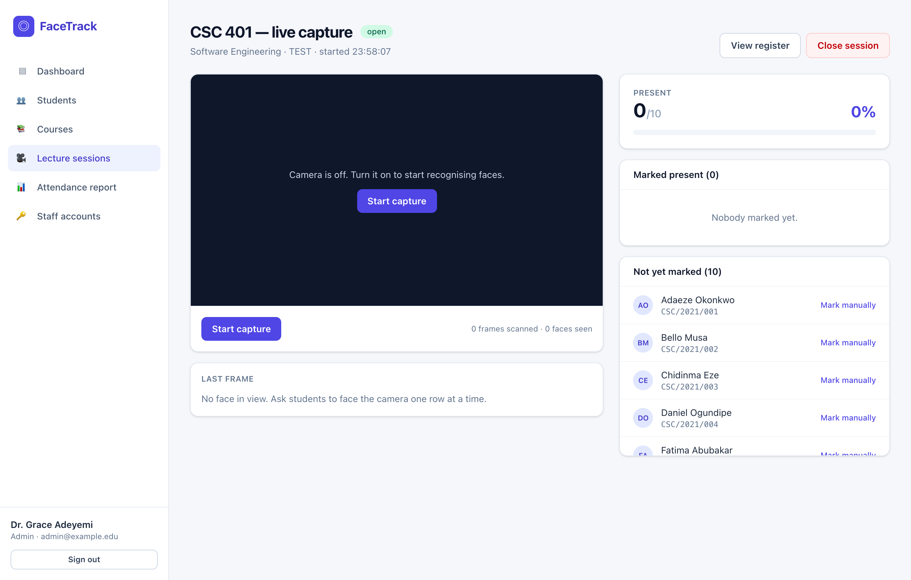
The formal record of one lecture — who was present, who was late, who was absent.
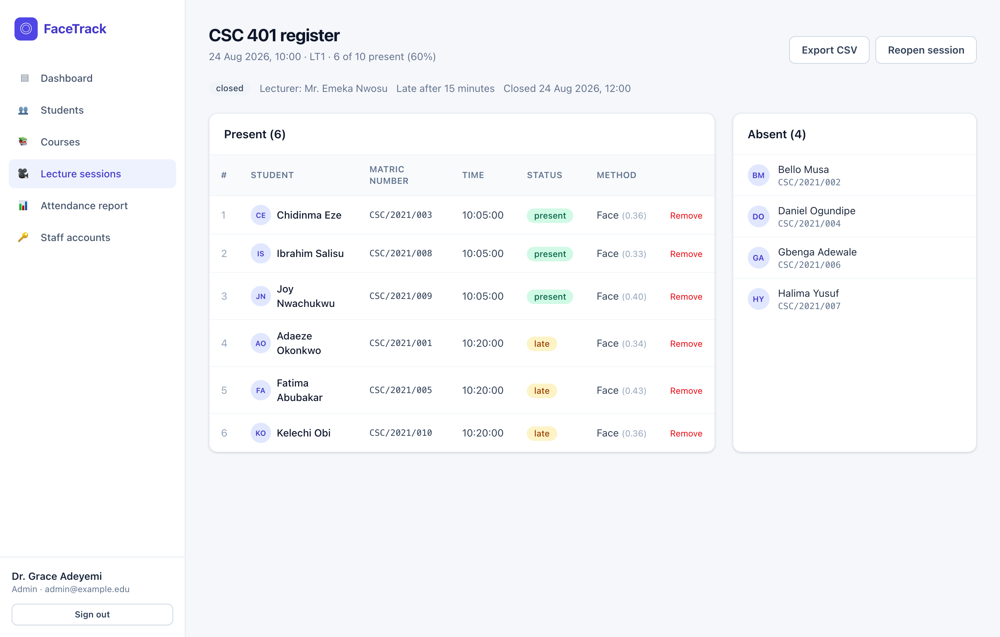
The whole semester for one course on a single grid — this is the screen to show during a demonstration or defence.
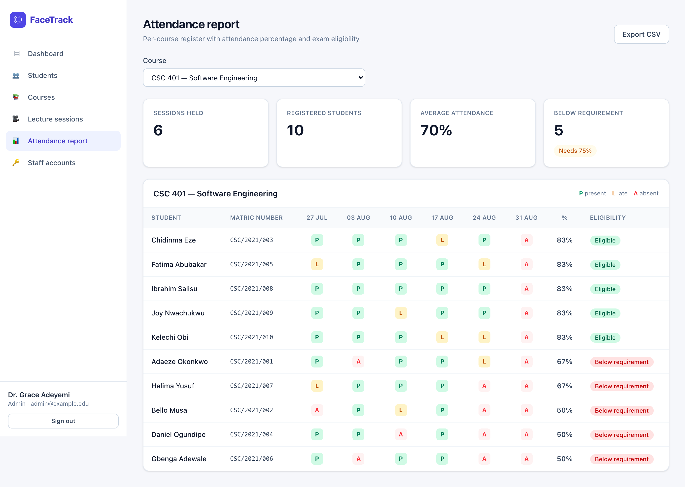
Where lecturers and administrators are created. This item does not appear in the sidebar for lecturers.
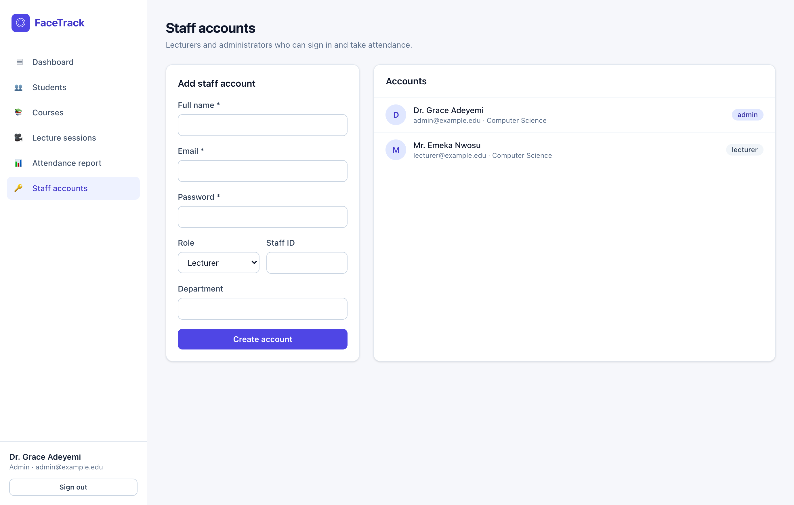
The three journeys that string the screens together.
Do this once per course, before the first lecture. Step 2 is the slow one — budget about a minute per student, and do it in a well-lit room.
This is the routine you repeat every lecture. Start the session a minute early so the models finish loading, and always close it at the end — a session left open can still accept attendance.
Registering one student and marking them present, from a standing start:
| # | Where | What you do |
|---|---|---|
| 1 | Sign in | Log in as admin@example.edu / admin1234 |
| 2 | Students → Register student | Enter CSC/2021/011 and the student's name |
| 3 | ↳ Face enrolment | Turn on the camera, capture 3 samples, Save student |
| 4 | Courses → CSC 401 | + Add students, tick the new student, Register 1 student |
| 5 | ↳ same page | Start lecture session |
| 6 | Live capture | Start capture, sit the student in front of the camera |
| 7 | ↳ watch | Green box appears with their name; Present 1/11 |
| 8 | ↳ finish | Close session, then check Attendance report |
Ten documented scenarios the platform supports.
The problems you are most likely to hit, and what to do about them.
| Symptom | Why it happens | What to do |
|---|---|---|
| The camera button stays greyed out | The face models (~12 MB) are still downloading. | Wait 10–40 seconds. If it never finishes, reload the page — a partial download is retried from scratch. |
| “Camera permission was denied” | The browser blocked access, usually from an earlier refusal. | Click the padlock in the address bar, set Camera to Allow, then reload. |
| Nothing happens when you turn the camera on | The page is on an insecure address such as a LAN IP. | Use the HTTPS live link, or localhost if running it yourself. See section 2.3. |
| “No face detected” during enrolment | Backlighting, or the student is too far away. | Face the student towards the light, move to about an arm's length, and stay still while capturing. |
| A red box — a real student is not recognised | They have no face template, or are not on this course's class list. | Check the Students page for a red Not enrolled badge, and the course class list. Mark them manually for now, and re-enrol afterwards. |
| Recognised, but marked late | They were recognised after the late cut-off for the session. | Expected behaviour. Set a longer cut-off when starting the session if your lectures fill slowly. |
| “This session is closed” | Attendance cannot be added to a finished lecture. | Open the session register and press Reopen session if it was closed by mistake. |
| “This course already has an open session” | A previous sitting was never closed. | The system takes you to that session. Close it, then start a new one. |
| “Register students on this course first” | The class list is empty. | Open the course and add students before starting a session. |
| The report grid is empty | No sessions have been held for that course yet. | Run at least one lecture session. Only sessions that exist appear as columns. |
| Attendance stops being recorded mid-lecture | Capture was paused, or the session was closed in another tab. | Check for the red SCANNING badge and that the frames counter is climbing. |
Worth stating plainly, especially during a demonstration:
Keep this page open during a demonstration.
| Live link | https://attendace-system-david.vercel.app/ | |
| Administrator | admin@example.edu | admin1234 |
| Lecturer | lecturer@example.edu | lecturer1234 |
| Newly marked | |
| Already marked | |
| Not recognised |
P present · L late · A absent — the % column is measured against the course requirement (75% by default).